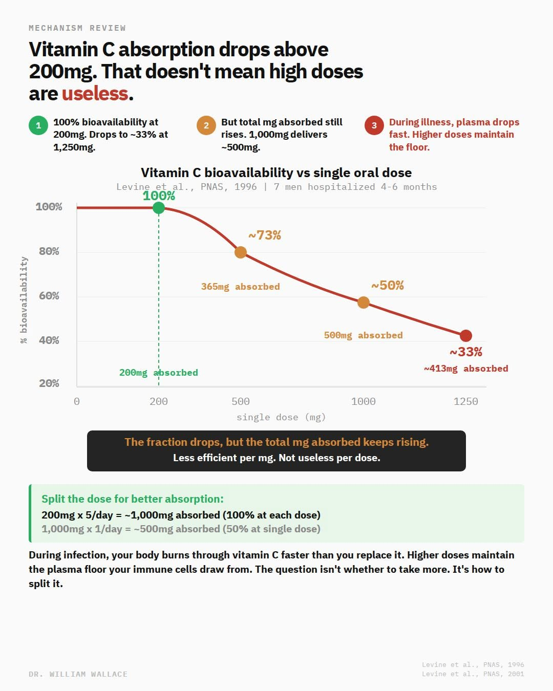

One of the best descriptions of the pharmacokinetics of vitamin C that I have ever read.
(This is exactly why I take my vitamin C in time-release form.)
Also see this post: ↪ Vitamin C blood levels follow an S-curve and plateau, with saturation near 1000 mg/day.
#vitamincHD #marklevineHD
Most people who take vitamin C take 1,000mg in a single pill. Most people who criticize that dose say absorption drops above 200mg so you're wasting your money. Both groups are missing the more interesting part of the data.
Levine et al. (1996, PNAS) conducted one of the most rigorous vitamin C pharmacokinetic studies ever done. Seven healthy men were hospitalized for 4 to 6 months on a diet containing less than 5mg of vitamin C per day. They were then repleted at seven sequential doses from 30 to 2,500mg, with steady-state plasma concentrations measured at each level.
The absorption curve is sigmoidal. Bioavailability is complete (100%) for a single 200mg dose. At 500mg it drops to roughly 73%. At 1,000mg it drops to roughly 50%. At 1,250mg it is approximately 33%. The intestinal transporter SVCT1 saturates, renal excretion increases, and the fraction you absorb declines with every step above 200mg. Levine et al. (2001, PNAS) confirmed the same pattern in 15 women.
This is the part most people stop at. It's also where the analysis gets lazy.
The fraction drops, but the total milligrams absorbed still increases. At 200mg you absorb about 200mg. At 500mg you absorb about 365mg. At 1,000mg you absorb about 500mg. You are absorbing more vitamin C at every dose increase. You are just doing it less efficiently per milligram. Less efficient is not the same as useless.
This matters because of what happens on the demand side. Immune cells, particularly neutrophils, monocytes, and lymphocytes, actively concentrate vitamin C to levels 50 to 100 times higher than plasma through SVCT2 transporters. In healthy people consuming at least 100mg per day, intracellular concentrations reach roughly 1.5 mM in neutrophils and 3.5 mM in lymphocytes. These cells saturate at about 100mg daily intake under normal conditions.
But conditions are not always normal. During infection, inflammation, surgery, or critical illness, plasma vitamin C can drop below 30 micromol/L within days. Activated neutrophils burn through vitamin C during the oxidative burst, taking up oxidized dehydroascorbic acid via glucose transporters and reaching intracellular concentrations as high as 10 mM. The body pool, roughly 1.5 to 2 grams total, can be substantially depleted during severe illness. At that point, the rate of consumption exceeds what a 200mg dose can replace.
This is the argument for higher doses during illness. Not that absorption is efficient. It is not. But that the absolute amount reaching your bloodstream is still higher at 500 or 1,000mg than at 200, and during periods of high demand, that additional supply maintains the plasma floor your immune cells draw from. The Cochrane review on vitamin C and the common cold (Hemila & Chalker, 2013) found that regular supplementation (200mg to 2g daily) reduced cold duration by 8% in adults and 14% in children, with larger effects in those under physical stress.
The practical insight is not about whether to take more. It is about how to take it.
200mg taken five times per day delivers approximately 1,000mg absorbed, because each individual dose falls within the range of complete bioavailability. 1,000mg taken once per day delivers approximately 500mg absorbed, because the single large dose exceeds SVCT1 saturation.
Same total dose. Roughly double the absorption. If you are going to take a gram of vitamin C per day, splitting it into smaller doses across the day is a straightforward way to get more of it into your body.
For most healthy people eating a reasonable diet, 200 to 400mg per day is sufficient to saturate plasma and immune cells. Supplementation beyond that has diminishing returns under normal conditions. But during acute illness or high physical stress, the math changes because the demand side changes, and split dosing becomes the most efficient way to meet it.
J
Levine et al., PNAS, 1996
Levine et al., PNAS, 2001
Hemila & Chalker, Cochrane Database Syst Rev, 2013
